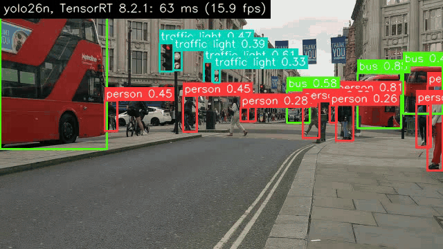
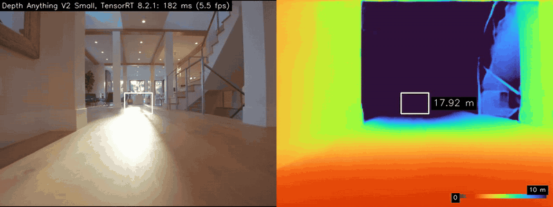
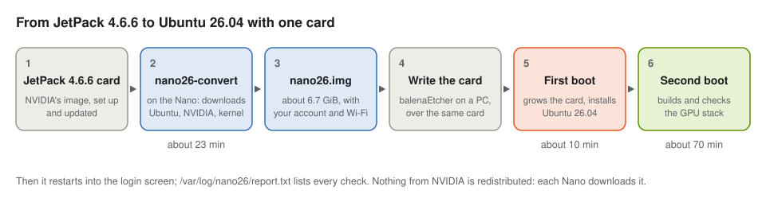

- The Nano now boots Ubuntu 26.04.1 with its own systemd 259, on L4T R35.6's Linux 5.10 (JetPack 5's kernel) plus 27 patches of ours. JetPack 4 and Ubuntu 18.04 are gone from the card.
- The GPU runs CUDA 11.4 and cuDNN 8.6 from JetPack 5, which NVIDIA never released for the Nano, and CUDA 12.6 with cuDNN 9.3 beside them through NVIDIA's CUDA 12.2 upgrade driver. OpenGL 4.6, OpenGL ES 3.2 and Vulkan 1.3 compute work too.
- For neural networks, TensorRT 8.2 from JetPack 4 is back as the default. It has kernels for the Nano's Maxwell GPU and runs our models 1.5 to 1.6 times faster than JetPack 5's TensorRT 8.5, which stays installed.
- Memory runs at 1,600 MHz, the CPU at up to 1,479 MHz and the GPU at up to 921.6 MHz, the same as stock. Power modes, the fan, USB 2 and 3, Wi-Fi through a USB adapter and the HDMI desktop (Xfce or Unity) work.
- The video engine (VIC) took the most detective work. It needed a kernel fix for its firmware, and a small helper that corrects how JetPack 5's libraries program it. Hardware decoding and encoding of H.264 and H.265 followed.
- With a USB webcam, YOLO26 object detection runs live at 23 frames a second, and Depth Anything V2 estimates distances in metres at 5.5 frames a second for an indoor robot.
- A converter turns a JetPack 4.6.6 card into this system on the Nano itself, from Ubuntu's and NVIDIA's own downloads. It has run end to end once, and the kernel it downloads isn't published yet. The board's boot firmware is never written.


1. Why bother
The Jetson Nano is still a lovely board: four ARM cores, a 128-core Maxwell GPU that runs CUDA, 4 GB of RAM, and dedicated engines for video. But its software stopped in time. JetPack 4.6.6 ships Ubuntu 18.04, which ended standard support in 2023, with Linux 4.9 and CUDA 10.2. Modern Python, ROS 2, current compilers and most new libraries don't target it any more.
NVIDIA's later releases, JetPack 5 and 6, only support the Xavier and Orin boards. The goal here was to see how far a Nano could be pulled forward anyway:
- Ubuntu 26.04 as the operating system, with its own init system, not a patched old one;
- a newer kernel, because modern systemd needs at least Linux 5.4;
- CUDA that still computes correctly on the GPU, then newer CUDA if possible;
- every board feature that worked before still working, with anything missing written down as a backlog rather than hidden.
The intended uses drove the priorities: ROS 2 and Nav2, emulators, films over HDMI, a USB webcam with live object detection, and speech recognition.
2. Meet the hardware
At the heart of the Nano sits NVIDIA's Tegra X1 system-on-chip (internally "T210"). It isn't one processor but a collection of specialised engines sharing one memory. Knowing which engine does what makes the rest of this story much easier to follow.
Some terms that come up again and again:
- nvgpu is NVIDIA's kernel driver for the GPU. CUDA, OpenGL and Vulkan all go through it.
- nvmap hands out memory buffers that the CPU, GPU and engines can share.
- host1x / nvhost feed command buffers to the engines and track progress with "sync points".
- VIC (Video Image Compositor) converts colour formats and scales frames, e.g. a camera's YUV into the RGB a neural network wants. Inside it is a small falcon microcontroller running NVIDIA firmware.
- EMC is the external memory clock. At boot it runs at 204 MHz, and the kernel has to raise it to 1,600 MHz using timing tables the bootloader trains at every power-on.
- tegradc is NVIDIA's display driver, which the NVIDIA X driver talks to.
3. What JetPack actually is
"JetPack" sounds like one thing, but it's a bundle. At its base is L4T (Linux for Tegra), NVIDIA's board support package: boot firmware, a kernel with NVIDIA's drivers, and a set of closed user-space libraries. On top come CUDA, cuDNN, TensorRT and the multimedia stack. Each JetPack pins all of these to one Ubuntu release.
Two facts made this feasible. First, NVIDIA's JetPack 5 kernel source (published by NVIDIA, and conveniently mirrored by the OE4T project) still contains the Tegra X1 drivers: the GPU driver still knows the GM20B, and the display driver still has its Tegra210 code. They just aren't built or tested for the Nano. Second, JetPack 5's closed libraries also turned out to contain Tegra X1 code paths and GPU code for the Nano's sm_53 architecture, which we checked on the PC before trying them.
4. Working safely
A failed experiment on an embedded board can be expensive: write the wrong thing to the boot flash and you need recovery tools you may not have. So we set a few rules early and kept them throughout:
- The QSPI boot flash is never written. All changes live on the SD card.
- Every card gets a full, checksummed backup on the PC before it changes. The first card, with JetPack 4.6.6 and the first Ubuntu 26.04 work, was set aside once the kernel trials began. Those started on a second card, which began returning corrupted files in its third trial, so they moved to a third, a 64 GB card, where the rest was done.
- New kernels boot once, then fall back. A small init program, running as process 1 on the trial boot, restores the previous boot menu before starting the system. A kernel that fails later lands on the old one at the next power-up; one that dies before init leaves the old kernel one choice away in the boot menu, or the card goes back into the PC's reader.
- Nothing counts until it passes on the real Nano. PC tests, emulation or a clean install aren't evidence that the hardware works.
- No NVIDIA binaries in git. Scripts fetch NVIDIA's packages from NVIDIA's own repository, check their SHA-256 and repackage them locally.
The converter of section 11 keeps these rules for other people's Nanos. What it writes, where each download comes from, the clocks and voltages the kernel runs the board at, and what was never tested are set out in the repository's safety page.
extlinux.conf names, so a new kernel needs no flashing. The one-boot entry makes every kernel experiment reversible: the old kernel stays in the menu, and the old default comes back as soon as the new kernel reaches userspace.5. Porting the kernel
The core problem: old programs and libraries speak to the kernel through "ioctls", numbered requests with fixed binary layouts. JetPack 4's libraries were built for JetPack 4's kernel. Wherever JetPack 5's kernel changed a request's size or meaning, or dropped it, an old library breaks, often silently. Many of the patches are small translators that accept the old layout as well as the new one.
The rest teach JetPack 5's kernel things NVIDIA only ever did for the Nano in JetPack 4: where the memory timing tables are, how to power the display's encoders, how to tell the video firmware where its microcode lives. A bug-fix patch also went into the shared IOMMU driver.
The 27 patches, one by one
Each patch below opens to show what went wrong on the Nano, what the patch changes and a diagram of both. In every diagram the top row is JetPack 5's kernel as NVIDIA ships it and the bottom row is the same path with the patch: blue marks what the patch changes, red where it broke, and green the result. "Trial N" is the Nth numbered boot of a 5.10 build on the Nano, and every patch file in the repository opens with the same description.
GPU and CUDA
0001CUDA 10.2's address-space requeststrial 11
What went wrong. CUDA 10.2 makes 35 different requests (ioctls) of the GPU driver. Three of them, ALLOC_AS, ALLOC_SPACE and FREE_SPACE, changed size between JetPack 4 and JetPack 5, and JetPack 5's driver matches a request's number and size exactly, so it refused the old ones.
What the patch does. Serves JetPack 4's layouts beside JetPack 5's: each old request is translated field by field into the new structure, and the answer is translated back.
0002Small GPU pages when there is no IOMMUtrial 11
What went wrong. The 5.10 device tree leaves out NVIDIA's own IOMMU for the GPU, which 5.10 has no driver for, so the GPU reaches memory directly. The GPU driver's big pages need contiguous addresses, which direct access can't promise.
What the patch does. Turns big pages off on the Nano's GPU when it has no IOMMU, as JetPack 5 already does for Xavier's GPU.
0003nvmap on Tegra210, with file-descriptor handlestrial 11
What went wrong. nvmap, NVIDIA's driver for sharing memory between the CPU, the GPU and the engines, refused to load on anything older than Tegra186. JetPack 4's libraries also expect its handles as file descriptors, where JetPack 5's nvmap hands out plain numbers.
What the patch does. Accepts Tegra210, and builds nvmap to return handles as file descriptors, as JetPack 4's did.
0007A GPU power-on that froze the whole boottrial 8
What went wrong. The GPU's first power-on prepares its clock. One of that clock's parents belongs to the GPU driver and was registered with the GPU device, and since Linux 4.15 the clock framework wakes a clock's device before preparing it. The GPU was still waking up, so the call waited for itself while it held the clock framework's global lock. Every other driver that touched a clock then blocked too, the SD card's among them, and the boot stopped.
What the patch does. Registers that clock without a device. That is how it behaved on 4.9, whose clock framework never wakes devices. A tracing patch (diagnostic 0006) found it.
0008The GPU bus clock's prepare steptrial 8
What went wrong. With the freeze gone, the GPU's power-on would fail at the next step: JetPack 5 stubs out the GPU bus clock's prepare on kernels from 4.15, with a note to drop the check once voltage scaling is added.
What the patch does. Does what JetPack 4's copy of the file does: sets the GPU rail's voltage for the bus clock's rate, from the voltage tables 5.10 already has for Tegra210. Patch 0022 does the same for the video engines' bus.
Memory and CPU speed
0009Memory timing tables from the device treetrials 13 and 14
What went wrong. Memory stayed at its 204 MHz boot speed, and a large CUDA test ran about nine times slower than under 4.9. The upstream memory driver takes its timing tables only from a memory region a bootloader fills, and the Nano's bootloader doesn't fill one. It writes its training results into the device tree instead, at every boot, which is where JetPack 4's kernel read them.
What the patch does. When there is no such region, reads the tables from the device tree: the set for the board's RAM, with every field JetPack 4 read. Unlike JetPack 4 it refuses a malformed table, and upstream's own checks still apply, so memory never runs faster than the table says was trained.
0010The bandwidth manager follows the memory clocktrial 13
What went wrong. JetPack 5's bandwidth manager sets the memory clock from what the GPU, SD card, USB and PCIe ask for. It read the clock's range once, while starting, and it starts before the memory driver has loaded its tables, so the range was 204 MHz alone and every later request was capped there.
What the patch does. Re-reads the range before each request, widens it once the clock offers more, and lifts limits left at the old maximum.
0011Memory speeds in the voltage tabletrial 14
What went wrong. Every switch to 1,600 MHz was refused as too high. The core rail's voltage table gives each clock its top rate per voltage, and JetPack 5's entry for memory is a placeholder that JetPack 4 filled in at boot from the memory tables. JetPack 5 skips that step on 5.x, with a note that the memory part isn't enabled yet.
What the patch does. Fills the entry from the board's memory tables, as JetPack 4 did: up to 204 MHz from 800 mV, and up to 1,600 MHz from 900 mV.
0012A memory floor that follows the CPUtrial 15
What went wrong. The upstream CPU frequency driver, which 5.10 uses on Tegra210, scales the CPU but never asks for memory speed. JetPack 4's driver also set a memory floor from the CPU's speed, and that floor is what keeps memory at 1,600 MHz under 4.9.
What the patch does. Adds JetPack 4's floor: on each CPU speed change, it asks the bandwidth manager for the memory speed the device tree's table gives that CPU speed, raised before the CPU speeds up and lowered after it slows down.
0013JetPack 4's 1.2 GHz CPU minimumtrial 17
What went wrong. 4.9 never lets the Nano's CPU drop below 1.2 GHz, and with 0012's floor that also holds memory at 1,600 MHz. Under 5.10 the CPU idled down to 204 MHz while it waited on the GPU, took memory down with it, and CUDA at the lower GPU clocks ran slower than under 4.9.
What the patch does. Sets a 1.2 GHz minimum on the CPU's frequency policy, on boards with JetPack 4's CPU frequency node. A lower maximum still wins, so pinning the CPU low still works.
0016The display's bandwidth pooltrial 21
What went wrong. The display reserves guaranteed memory bandwidth from a pool sized once, at start-up, from the top memory speed. At that moment it was still the 204 MHz boot speed (see 0010), so the pool was too small and the HDMI head's reservation was refused.
What the patch does. Updates the range, as 0010 does, before sizing the pool and before each reservation, and grows the pool when the range has grown.
0020Power modes cap memory through the bandwidth managertrials 27 and 29
What went wrong. The power modes (5W, MAXN) cap the memory clock through a file this driver creates. JetPack 5's driver asks a newer interconnect framework for a path Tegra210 doesn't have, so it failed to start, the file never appeared and the power-mode service failed. Its error path also left a call trace in every boot.
What the patch does. Uses the bandwidth manager on Tegra210, as JetPack 4 did on every chip and JetPack 5 still does for Xavier. The bandwidth manager works on Tegra210 from 0010.
0022Clocks for the video enginestrial 33
What went wrong. VIC, the video converter engine, never powered on (“Cannot turn on clock vic03”). The video engines' bus clock had the same stub as 0008, so every prepare of a VIC, video encoder, decoder or JPEG clock failed. The same file also skipped the voltage check when it rounded a bus rate.
What the patch does. As in JetPack 4's copy of the file: preparing a bus clock sets the core rail for its rate, unpreparing drops it, and rate rounding goes through the voltage table.
Display
0014JetPack 4's display driver starts on 5.10trial 21
What went wrong. JetPack 5's source still builds JetPack 4's display driver, tegradc, with its Tegra210 code, but nothing ran it. Its start-up had five problems here: the bandwidth managers start later on 5.10, and their “try again” became a lasting error; any error then crashed on a structure only newer chips have; a clock was released twice; a power domain was never detached after a failure; and a pointer was used before it was set.
What the patch does. Waits until the bandwidth managers and HDMI's display data channel exist, fixes the other four problems, and makes the error path free what it took.
0017Buffer id 0 means no buffertrials 22 and 23
What went wrong. JetPack 4's X driver passes buffer id 0 for “no buffer” on the planes it doesn't use. JetPack 5's display interface uses a negative id for that, so it looked up file descriptor 0 for each unused plane, and every page flip failed.
What the patch does. Takes 0 as “none” again, as JetPack 4 did, and says why when a buffer can't be used, where every failure used to read as out of memory.
0018NVIDIA's framebuffer becomes fb0trial 23
What went wrong. JetPack 4's X driver opens /dev/fb0 and pairs framebuffer N with display head N. The boot console's simple framebuffer registered first and took fb0, so X sized the screen from its single mode, 800x600.
What the patch does. Gives NVIDIA's framebuffer a claim over all of memory before it registers. 5.10 then removes the boot console's framebuffer, which it overlaps, and NVIDIA's becomes fb0 and takes over the console, as under 4.9.
0019The IOMMU flushes every page entrytrial 24
What went wrong. X's buffers and the boot logo are scattered in memory, so the display reads them through an IOMMU. JetPack 5's IOMMU driver for this chip wrote each page entry into the CPU's cache and left flushing to one step at the end of a mapping, which missed entries: after a scattered buffer only the last chunk was flushed, and even that lost its last page. The IOMMU then read zeros for entries still in the CPU's cache, and kept them. The display faulted tens of thousands of times.
What the patch does. Writes each entry through a helper that cleans it to memory and flushes the IOMMU's page-table cache and TLB for it at once, as mainline Linux's driver does.
0027The display's real power state, and its resetstrial 37
What went wrong. Two problems only 5.10 shows. Asked whether a display head was powered, the driver answered whether power management was enabled for it, which is always true, so after a screen blank the interrupt handler read a head that was off and timed out. And the driver held the HDMI encoder's resets for good, while 5.10 must take every reset of that power domain before switching it off, so the domain never switched off (11 errors in one boot).
What the patch does. Asks the kernel's power-domain code whether the head is really on, as 4.9 asked the power controller, and takes each reset only while it uses it, as mainline's tegra-drm driver does.
0028The HDMI encoder's domain is the display's parenttrial 37
What went wrong. Once 0027 let it switch off, the HDMI encoder's power domain (sor) could switch off under a running display, because the driver holds it only around short uses. JetPack 4's power code kept the order by hand: sor on before the display domains, and off after the last of them.
What the patch does. Makes sor the parent of the display heads' domains and venc's, so it stays on while any of them is on, as JetPack 5 already does for the JPEG and decoder engines.
USB and PCIe
0005A two-byte stack overflowtrial 3
What went wrong. Powering on the PCIe lane for the Ethernet chip formatted prod_c_ss plus the lane's USB 3 port number into an 11-byte buffer. That lane has no USB 3 port, so the number was -22, an error code, and prod_c_ss-22 needs 13 bytes with its terminator. The stack protector caught the overflow and panicked the kernel early in the boot.
What the patch does. Looks those settings up only for lanes that have a USB 3 port, with a 16-byte buffer and a length-checked print.
0021USB 3 lanes named 'xusb'trial 30
What went wrong. The USB 3 half of the onboard hub never appeared, with no error. The lane set-up runs only for lanes whose function is named usb3-ss, mainline's name, and JetPack 5 calls it xusb on Tegra210, as JetPack 4's device trees do.
What the patch does. The five checks test for the name the lanes carry. The register values are the same either way.
Video and JetPack 4's libraries
0004The chip id where JetPack 4's tools lookevery build
What went wrong. NVIDIA's tools (nvpmodel, jetson_clocks, tegrastats) read the chip id from /sys/module/tegra_fuse/parameters/tegra_chip_id. JetPack 5 provides that file only in an older fuse driver, which clashes with the upstream one this kernel uses.
What the patch does. The upstream fuse driver exposes the same read-only value there: 33 on the Nano.
0023nvmap's older read and write requesttrials 34 and 36
What went wrong. JetPack 4's video converter and camera service stopped on a memory read and write request (“Unknown NVMAP_IOC”). JetPack 4's nvmap took three layouts of it; JetPack 5's kept two and dropped the 32-byte one these libraries use.
What the patch does. Serves the 32-byte layout again, read and answered as JetPack 4 did, with a build-time check that keeps it at 32 bytes.
0024Naming a fencetrial 35
What went wrong. Fences tell a program when the hardware has finished a job. 5.10 has no Android sync framework, and JetPack 5's request to name a fence works only when that framework is built in. JetPack 4's video converter names its fences, and stopped on the refusal.
What the patch does. Without the framework, checks that the fence is made only of the host1x engine hub's sync points, the check JetPack 4 made, and returns success. The name isn't kept: JetPack 4 used it only in debug output.
0025Logging unknown fence requests (diagnostic)used in trial 35
What went wrong. JetPack 4's libraries were built for Android's older requests on fences. 5.10 refused them without a word, so there was nothing to go on.
What the patch does. Logs each refused request, rate limited, with its number and the program that made it. It stays in the build because 0026 is written on top of it; with 0026 applied, the converter's requests are all served and nothing is logged.
0026Android's older sync requeststrial 36
What went wrong. JetPack 4's 4.9 kernel served Android's older sync requests on fences: wait, merge and fence info. 5.10 has only the newer merge and file info, so JetPack 4's video converter could neither read nor wait on its fences.
What the patch does. Serves the three older requests with JetPack 4's layouts and behaviour beside the newer ones. A fence driver can add its own details to each point, and nvhost adds JetPack 4's sync point id and threshold.
0029Telling VIC's firmware where its FCE code isbuild 35
What went wrong. Tegra210's video converter engine, VIC, carries part of its firmware, the FCE microcode, inside its image, and needs the kernel to say where it is after each power-on. JetPack 5 dropped that step, so VIC's firmware halted every job and each one timed out after 10 seconds. Earlier trials had passed only because the 4.9 control boot before them left VIC set up.
What the patch does. Reads the FCE header from the firmware image and sends its size and offset at each power-on, as JetPack 4 and mainline Linux do. Section 7 tells the whole story.
The device tree is JetPack 4's own Nano tree, compiled for 5.10, with a handful of changes: a clock for the GPU's voltage regulator, the display behind the IOMMU, and timer interrupts listed so the CPUs can use their deepest idle state. The kernel port's notes list them all.
6. The new user space
Ubuntu 26.04 with its own init
systemd 259 needs Linux 5.4 or newer, which is exactly why the kernel had to move. On 5.10, Ubuntu 26.04 runs completely stock systemd, udev, network time and zram swap. The root filesystem was built on the Nano itself from Ubuntu's signed base image and archive, on real hardware rather than in emulation.
NVIDIA's libraries, repackaged
Ubuntu 26.04 knows nothing about Tegra, and NVIDIA's own L4T packages expect their own boards (JetPack 5's also try to manage the boot firmware). So a build script turns just the files the Nano needs into a few clean Debian packages (nano-l4t-core, -gl, -x11, -cuda, …) with hashed file lists and the right device permissions. The Nano first ran JetPack 4's libraries this way, then JetPack 5's R35.6 libraries once they passed every test, with NVIDIA's CUDA 11.4 runtime, cuDNN 8.6 and TensorRT 8.5.2 (with trtexec) packages alongside. The Nano-specific firmware and power tools stay from JetPack 4. CUDA 12.6 and JetPack 4's TensorRT 8.2 came later, packaged the same way (sections 8 and 9).
The desktop: an older X server on purpose
NVIDIA's X driver for Tegra was built for X.Org 1.20, and Ubuntu 26.04 ships X.Org 21.1, whose internal structures moved: the driver would write its functions into the wrong slots. So the GPU desktop runs Ubuntu 20.04's X server 1.20.13, installed in its own directory and used only for the login screen and session, next to Ubuntu 26.04's own. Unity and Xfce both run on it with OpenGL 4.6 on the GPU. The catch: that X server's free security updates ended in 2025.
Two video converter packages
JetPack 4's and JetPack 5's libraries share file names (libnvos.so, libnvrm_gpu.so…), so one program can't load both. The video converters are therefore packaged in their own folders, each with a launcher:
7. The video engine mystery
With the new user space in place, almost everything worked, except converting video frames with NVIDIA's GStreamer element nvvidconv. Every job sent to VIC timed out after 10 seconds. It turned out to be two unrelated problems.
Part one: firmware that never started
We ruled things out one by one: JetPack 5's libraries (JetPack 4's hung too), Ubuntu 26.04's libraries (an Ubuntu 18.04 chroot hung too), permissions, the desktop, clocks, power state. Then we read VIC's own falcon processor registers directly while a job was waiting. Its firmware had stopped itself with error code 9.
The cause: VIC's firmware image contains a second piece of microcode (the FCE), and the kernel has to tell the firmware where it is after each power-on. JetPack 4's kernel did that. JetPack 5's kernel still has the definitions in its header but never sends them; upstream Linux's open VIC driver still does it for "old VIC firmware", so newer chips apparently don't need it. An early test probably passed only because VIC still held that setting from an earlier boot on the old kernel. Sending the two values by hand made the converter pass at once, and patch 0029 restored them in the kernel (build #35).
Part two: right engine, wrong settings
With VIC running, JetPack 4's converter produced correct pictures. JetPack 5's produced pictures that were almost right: colours off by a few levels everywhere, and scaling that skipped its smoothing filter on brightness. No converter setting changed that.
VIC receives a 1,552-byte settings block with every job. We recorded those blocks from both converters doing the same conversion and decoded them field by field, using the public description of the VIC 4.0 settings block in the open-source libdrm tests. JetPack 5 used the correct layout and the same filter, but also switched on a few options JetPack 4 leaves off:
- gamma conversion on the input and a different gamma curve on the output, which shifts every pixel slightly;
- scaling in "linear light": converting YUV to RGB, scaling, then back to YUV;
- a different vertical colour-sample position, which gave the last row above a horizontal colour edge the colour from below it;
- blending and alpha-fill settings, which turned out to be harmless: setting the blending to JetPack 4's zeros on its own ruined the picture, so it stays.
A small preloaded library, vic_patch.so, now rewrites just those fields in each job before it reaches VIC. NVIDIA's files are untouched. We tested each group of fields on its own, and with the three groups together the results matched JetPack 4's:
One last surprise: in a test where the same program converts frames on VIC and then checks them with CUDA, the program's own CUDA context was destroyed as soon as the video pipeline started. Starting the converter left a destroyed CUDA context current on that thread. Using CUDA's shared primary context, as the CUDA runtime (and so PyTorch and TensorRT) does, avoids it. With that, 30 out of 30 frames passed at 53.1 dB on every row.
Decoding and encoding
VIC is one of four video engines. The other three, NVDEC for decoding, NVENC for encoding and NVJPG for JPEG, stayed switched off in our device tree at first. Switched on, they came up under JetPack 5's kernel with no new patch: the fix for the engines' shared clock (0022) already covered them, and their firmware is JetPack 4's.
With JetPack 4's GStreamer elements, the hardware decoder plays 1080p H.264 at 172 frames a second and H.265 at 194, at about 10% of a CPU core, where software decoding managed 157 and 98 at 85%. We compared its output with a software decoder's, value by value: the brightness of every pixel was identical in all 300 frames of both formats, and the colour differed only by the averaging NVIDIA's converter applies after the decoder. Both encoders and the JPEG decoder passed as well.
JetPack 5's elements decode exactly too, colour included, and its H.265 encoder and JPEG decoder work. Its H.264 encoder crashes inside NVIDIA's closed library under every setting we tried, so H.264 encoding stays with JetPack 4's set. Each set sits behind its launcher: nano-r32-video for JetPack 4's, nano-r35-video for JetPack 5's, which can decode in the same program as CUDA and TensorRT.
8. CUDA 12 without a new kernel
JetPack 5 stops at CUDA 11.4, and more and more software wants CUDA 12. NVIDIA's route there is JetPack 6, so we read its sources first. Its kernel no longer has the Tegra X1's display driver (tegradc) or its VIC driver, two of the parts that took the most work here, so porting it would have meant doing them again. Its libraries looked better: a survey on the PC found code for the Nano's GPU (sm_53) in CUDA 12.6's libraries and in cuDNN 9.3, though not in TensorRT 10.3.
The way in turned out to be a package NVIDIA made for JetPack 5: cuda-compat-12-2, an "upgrade driver" that brings CUDA 12.2's user-space driver to JetPack 5's kernel. On the Nano it reported CUDA 12.2 and passed every test, while JetPack 6's own driver didn't find the GPU at all. CUDA's minor-version compatibility then lets CUDA 12.6's runtime, cuBLAS and cuDNN 9.3 run on that 12.2 driver, and all of them gave exact results.
So the Nano got CUDA 12 with no kernel change. It's packaged as nano-cuda12 and nano-cuda12-dev and installed beside CUDA 11.4, which stays the default; a program runs with CUDA 12 when it's started through nano-cuda12. CUDA 12.6's compiler builds programs for the Nano with GCC 11 after one fix: six math functions in Ubuntu 26.04's C library headers need the noexcept that nvcc expects. One program uses one CUDA or the other, not both. And since the driver is 12.2's, programs built with CUDA 12.6 need machine code for sm_53 built in, because the driver can't compile 12.6's intermediate code (inferred, not tested).
9. A webcam that sees
One of the uses this project started from was a USB webcam with live object detection. An old Logitech webcam worked straight away through the kernel's standard uvcvideo driver: uncompressed YUYV up to 2592x1944, MJPEG at 60 frames a second at 640x480 and 30 at 1080p, and its microphone records. The first uncompressed picture had a blue cast, most likely the camera's automatic white balance still settling, so the check now streams for five seconds before it measures.
Object detection
For detection we used Ultralytics' YOLO26n, exported to ONNX on the PC and built into a TensorRT engine on the Nano. TensorRT's Python module doesn't fit Ubuntu 26.04's newer Python, so a small C library, libnano_trt.so, loads and runs the engine, and Python calls it through ctypes. A camera program reads frames, runs the model, draws the boxes and serves the result as an MJPEG stream, which the PC watches through an SSH tunnel. One piece of YOLO26's head, the step that picks the 300 best boxes, wouldn't build in TensorRT 8.5, so it runs on the CPU in NumPy instead. The first live run reached 14.6 frames a second, with 58.7 ms of every frame spent on the GPU.
Why the GPU took so long
For a model of 4.1 billion operations a picture, 58 ms was slow. A per-layer profile showed why. TensorRT 8.5's own convolution kernels are built for the Xavier and Orin GPUs (sm_72 and sm_87), not the Nano's. On the Nano it falls back to cuDNN's general algorithms, which took almost half of the time, and runs each activation and format change as a separate pass.
TensorRT 8.2, brought back from JetPack 4
JetPack 4's TensorRT 8.2 was built with the Nano's GPU in mind. It expects CUDA 10.2, but JetPack 5's newer CUDA driver still runs programs built for older CUDA versions, so 8.2 can run from its own folder with its own cuDNN 8.2, cuBLAS and CUDA 10.2 runtime. Two runs failed before one passed:
- TensorRT 8.2 links NVIDIA's NvMedia library, which the new system doesn't have. A stand-in library now provides its 36 functions, each answering "not supported".
- Its builder then asked NvMedia how many deep-learning accelerators (DLA) the chip has, and stopped at the stand-in's error. Three of the stand-in's functions now answer as a Nano would: none.
The third run built YOLO26n with the same detections, in 36.5 ms of GPU time instead of 58.0. TensorRT 8.2 runs most convolutions with its own Maxwell kernels, which work on two FP16 numbers per instruction, and leaves cuDNN just seven layers. It's now the system's default (nano-trt82), and 8.5 is still one command away (nano-trt85). Live detection went from 14.6 to 23.1 frames a second, close to the camera's 24, with 73 ms from capture to the drawn frame.
10. Depth from one camera
The next use is an indoor robot, which maps its surroundings (SLAM) with the help of an IMU. A single camera can't measure distance by itself, but a neural network trained on many scenes can estimate it. We chose Depth Anything V2 Metric Small in its indoor version: it gives each pixel's distance in metres rather than just nearer and farther, it was fine-tuned on Hypersim's indoor scenes (up to 20 m), and its code and weights are Apache-2.0. Inside is a vision transformer, DINOv2's ViT-S with 24.8 million parameters, followed by a DPT head that turns its features back into a picture of distances.
At its usual input size, 518x392, the model needs 80.9 billion operations a picture, too much for the Nano. We export it for the webcam's 4:3 pictures at 280x210, 336x252 and 448x336, with 336x252 (28.9 billion) as the default.
Three things TensorRT 8.2 couldn't read
The export on the PC changes three spots in the graph without changing the result:
- DINOv2 resizes its position embedding to the input size on every run, with bicubic interpolation, which TensorRT 8.2 doesn't have. For a fixed input size it's a constant, so the export computes it once and stores it.
- LayerNorm squares each value's distance from the mean, which overflows in FP16 once that distance passes about 256. The export divides each token by its largest value first, so every square stays small.
- PyTorch writes one division as a Reciprocal operation, which TensorRT 8.2's ONNX parser doesn't know, so the export writes it another way.
The refusal
On the Nano, TensorRT 8.2 still built no engine at all: Could not find any implementation for node {ForeignNode[...]}. A "foreign node" is a part of the graph that TensorRT hands to Myelin, its internal compiler for transformer-style blocks. To find which part, the export now also writes small probe models, one for each piece of a transformer block, and a script builds each one on the Nano. The linear layers, LayerNorm and GELU built from TensorRT's own layers. The attention didn't: Myelin took it, then failed with cuBLAS error 1 querying major version. Why Myelin can't start cuBLAS here, when TensorRT's own layers can, is still unknown.
The fix: same model, different shape
YOLO26 has an attention block too, and TensorRT 8.2 built it from its own layers. The difference is shape. DINOv2 keeps its 433 tokens (one per 14x14-pixel patch, plus one) as rows of a table, multiplies them by weight matrices, and picks query, key and value out of a five-dimensional tensor. YOLO26 keeps its features as an image, uses 1x1 convolutions where DINOv2 uses weight matrices, and only multiplies four-dimensional tensors. So the export rewrites DINOv2 in YOLO26's shape. The tokens become an image one pixel tall, every linear layer becomes a 1x1 convolution with the same weights, and LayerNorm works across the image's channels.
The probes for the new layout went into the same run as the ones that found the problem, so one round on the Nano both found the cause and tested the fix. Every probe in the new layout built from TensorRT's own layers, and so did the whole model at all three sizes:
| Input size, FP16 | GPU per picture | Pictures a second | Difference from PyTorch |
|---|---|---|---|
| 280x210 | 122.2 ms | 8.2 | 0.7% or less |
| 336x252 (default) | 170.4 ms | 5.9 | 1.1% or less |
| 448x336 | 333.6 ms | 3.0 | 0.5% or less |
The last column is the mean relative difference from PyTorch's depth (AbsRel) on three indoor test pictures, the worst of the three. TensorRT 8.5, given the model in DINOv2's own layout, takes 253.3 ms at 336x252, so the rewrite on 8.2 is 1.49 times faster.
Live
On the webcam, the default 336x252 engine runs at 5.5 depth maps a second, with 210 ms from capture to the drawn map. The program uses 62% of one CPU core, and the GPU runs at 92% load and 45.5 °C. The map follows the scene: a person near the camera, a door, a corridor further back.
11. A converter for other Nanos
Everything so far was put together by hand, on our own Nano. Nobody else could repeat that, so the last part of the project was a converter: a program that starts from a Nano running NVIDIA's JetPack 4.6.6 and ends with the system described here. It carries no NVIDIA files. Each Nano downloads Ubuntu's packages from Ubuntu and NVIDIA's from NVIDIA, after its owner accepts NVIDIA's licence, and builds its own packages from them.

- On JetPack 4.6.6, the converter checks the board and the JetPack release, downloads everything while the old system still works, and builds the new system as an image file: Ubuntu 26.04's base, the 5.10 kernel, the downloaded packages, and the account, SSH keys, hostname and Wi-Fi settings of the running system. The card's 13 boot partitions are copied byte for byte.
- You write the image over the card from a computer. This is the step that replaces JetPack.
- The first boot grows the system to the whole card and installs Ubuntu's packages, with no network. That can't happen any earlier: Ubuntu 26.04's systemd doesn't run on JetPack 4's 4.9 kernel.
- The second boot repackages NVIDIA's libraries on the Nano, installs them, and checks CUDA 11.4 and 12.6, TensorRT, OpenGL ES, Vulkan and both video converters on the real GPU before it shows the desktop.
On our Nano, from a card restored to plain JetPack 4.6.6, the image took 23 minutes to build and came to 6.7 GiB. The first boot took about 10 minutes and the second about 70, of which packaging CUDA 12 took 30. Two things went wrong on the way and are now fixed in the converter. SSH hung before its password prompt: OpenSSH 10.1 and newer mark interactive traffic with a priority that our network lost between the router and the PC. And the Vulkan check crashed, because the display's device node still belonged to root when it ran.
The converter keeps the rules of section 4. It never writes the boot firmware, it refuses any board but the Nano 4GB developer kit it was tested on, and it checks every download against a signature or a pinned SHA-256. Writing to a second card instead of an image, it asks for the card by name and refuses anything mounted.
12. Where it stands
| Feature | Status | Notes |
|---|---|---|
| Ubuntu 26.04.1, systemd 259, native boot | works | Default boot, no failed units. |
| CUDA 11.4, cuDNN 8.6 | works | The default CUDA, with correct results on the GPU. CUDA 11.4's nvcc compiled for sm_53 with GCC 11 from a test folder; it isn't installed. |
| CUDA 12.6, cuBLAS 12, cuDNN 9.3 | works | Beside CUDA 11.4, through NVIDIA's 12.2 upgrade driver; programs opt in with nano-cuda12. CUDA 12.6's nvcc builds sm_53 programs. Larger CUDA 12 software, such as PyTorch, is untested. |
| TensorRT 8.2 (default) and 8.5.2 | works | 8.2 from JetPack 4, with a stand-in for the NvMedia library; 8.5 through nano-trt85. Both build FP32 and FP16 engines. |
| OpenGL 4.6, OpenGL ES 3.2, Vulkan 1.3 compute | works | JetPack 5's drivers. Vulkan graphics and presenting are untested. |
| HDMI desktop (Unity, Xfce) | works | X server 1.20 with NVIDIA's X driver, hardware mouse pointer. |
| Clocks, power modes, fan | works | RAM 1,600 MHz, CPU 1,479 MHz, GPU 921.6 MHz; MAXN and 5W; the fan starts at 51 °C. |
| USB 2 and 3, Wi-Fi (USB adapter), serial ports | works | Wi-Fi was tested with one USB adapter. The serial ports appear; data over the pins is untested. |
| VIC video conversion | works | Both converters pass; JetPack 5's with our fix and next to CUDA. The camera programs don't use VIC yet. |
| JetPack 5 converter's GPU path | broken | Writes flat frames. Not needed, because VIC does the same job. |
| Hardware video decode and encode | works | H.264 and H.265 decoding and encoding and JPEG decoding through JetPack 4's elements (nano-r32-video). JetPack 5's (nano-r35-video) do all but H.264 encoding, where its encoder crashes. |
| HDMI idle blanking | works | JetPack 5's X driver left the screen dark after the blank; a small service, nano-hdmi-wake, sets the mode again so a key press brings the picture back. The kernel still sees the monitor unplug and replug every few seconds while it's blanked. |
| USB webcam and its microphone | works | Every YUYV and MJPEG mode streams. |
| Live object detection (YOLO26n) | works | 23.1 frames a second at 640x480 on TensorRT 8.2, 73 ms from capture to the drawn frame. |
| Live metric depth (Depth Anything V2 Small) | works | 5.5 frames a second at 336x252. Its distances haven't been checked against a tape measure yet. |
| Converter from a JetPack 4.6.6 card | one run | Ran end to end once on this Nano. The kernel it downloads isn't published yet, and nobody else has run it. |
| ROS 2 Lyrical | untested here | Ran from apt under Ubuntu 26.04 on the old 4.9 kernel. Not installed again since the move to 5.10. |
| Ethernet | untested | The driver binds and makes up an address at each boot. No cable was ever connected. |
| DisplayPort, CSI cameras, the board's own audio (HDMI included) | off | Switched off in the 5.10 device tree, so they don't work yet. USB cameras and USB microphones do. |
| USB device mode, Vulkan graphics, 4K output, 40-pin header, over-temperature throttling | untested | Never tried under 5.10. |
13. Lessons
- "Unsupported" often means "untested". JetPack 5's kernel and libraries still carry most of the Tegra X1 code. The gaps were specific and findable.
- Make every experiment reversible first. The one-boot kernel entry and full card backups made it safe to run 39 kernel trials, each after a control boot of the old kernel, without a recovery cable.
- Diff against the version that works. Comparing ioctl traces, kernel logs and VIC settings blocks between JetPack 4 and JetPack 5 found nearly every problem.
- Read the hardware directly when the software is silent. The VIC firmware halt was invisible to the kernel and only showed up in the falcon's own registers.
- Newer isn't always faster. JetPack 4's TensorRT 8.2 runs the same models 1.5 to 1.6 times faster than JetPack 5's 8.5 here, because it was built for this GPU and 8.5 wasn't.
- When a compiler refuses a whole model, test it in pieces. Small probe models named the one block TensorRT 8.2 couldn't build, and putting the rewritten form in the same run saved a round trip to the Nano.
- Test your tests. One check failed correct output, and another, sampling too little, passed broken output.
- Write everything down as you go. The notes kept during the work, every trial and every decision, are why this post could be written at all.
Credits and caveats
This builds on NVIDIA's published L4T sources and packages (among them JetPack 4's TensorRT 8.2 and JetPack 6's CUDA 12.6 libraries), the OE4T mirrors of the L4T R35.6 and R32.7.6 kernel trees, Ubuntu, and the libdrm project's documentation of VIC's settings block. The camera work uses Ultralytics' YOLO26 (AGPL-3.0) and Depth Anything V2 (Apache-2.0). The repository holds scripts, patches and notes only, with no NVIDIA binaries or model weights; its scripts download NVIDIA's packages from NVIDIA and the models from their publishers, and check them by SHA-256.
This is a hobby experiment on one Nano 4GB (module P3448-0000). It isn't supported by NVIDIA, and parts of it lean on closed libraries in ways they weren't designed for. If you try it, keep a backup of your card, and read the safety page first.